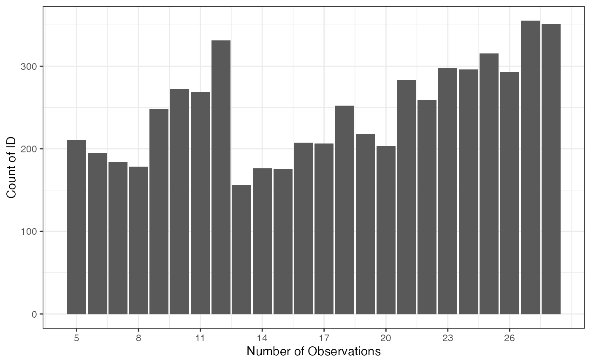

This package provides the wages_hs2020 data set, which is a longitudinal data of mean hourly wages along with several demographic variables from National Longitudinal Survey of Youth (NLSY) from Round 1 (1979 survey year) to Round 28 (2018 survey year). The cohort provided in this data set are those with maximum highest grade completed is high school and participated at least 5 years in the survey. Further, the mean hourly wage is computed using a weighted average of hourly wage of different jobs with the hours of work for each job as the weight. However, when the information of hours of work is absent, we only use the arithmetic average.
Another aim of this vignette is to provide the example of the usage of wages data in longitudinal data analysis, in this case using brolgar, an R package to analyze and visualize longitudinal data (Tierney, Cook, and Prvan, 2020).
Explore the data feature
brolgar can only be used if the data frame is in a tsibble form. Hence, we should transform the data into this object first. The key would be the id of the subject, and the index is the year variable.
wages_hs2020 <- as_tsibble(x = wages_hs2020,
key = id,
index = year,
regular = FALSE)Visualize the number of observation per ID
Using brolgar’s features function, we can extract the number of observation of each ID and plot it using ggplot2.
wages_hs2020 %>%
features(mean_hourly_wage, n_obs) %>%
ggplot(aes(x = n_obs)) +
geom_bar() +
scale_x_continuous(breaks = seq(5, 28, 3)) +
theme_bw() +
xlab("Number of Observations") +
ylab("Count of ID")
When is the first and the last time the subject attend the survey?
Further, we can explore the distribution year when the IDs’ first time and last time in the study.
first_time <- wages_hs2020 %>%
features(year, list(min = min)) %>%
ggplot(aes(x = min)) +
geom_histogram(binwidth = 1) +
xlab("First time in study") +
scale_x_continuous(breaks = seq(1979, 2108, 5)) +
theme_bw()
last_time <- wages_hs2020 %>%
features(year, list(max = max))%>%
ggplot(aes(x = max)) +
geom_histogram(binwidth = 1) +
xlab("Last time in study") +
scale_x_continuous(breaks = seq(1979, 2108, 5)) +
theme_bw()
first_time + last_time
Summarize the data feature
We can also summarize the mean hourly wage using the features function. Here, we want to display the minimum, median, and maximum value of mean hourly wage of each ID.
wages_three_feat <- wages_hs2020 %>%
features(mean_hourly_wage,
feat_three_num
)
wages_feat_long <- wages_three_feat %>%
pivot_longer(c(min, med, max), names_to = "feature", values_to = "value")
ggplot(wages_feat_long) +
geom_density(aes(x = value, colour = feature, fill = feature), alpha = 0.3) +
theme_bw() 
Sample some subjects and visualize it
Creating a line plot of the wages of all IDs might be too messy since there are 5931 IDs. Thus, we can take some sample of ID’s randomly using brolgar’s facet_sample function.
set.seed(202102)
ggplot(wages_hs2020,
aes(x = year,
y = mean_hourly_wage,
group = id)) +
geom_line(alpha = 0.7) +
facet_sample() +
ylab("mean hourly wage") +
theme_bw()